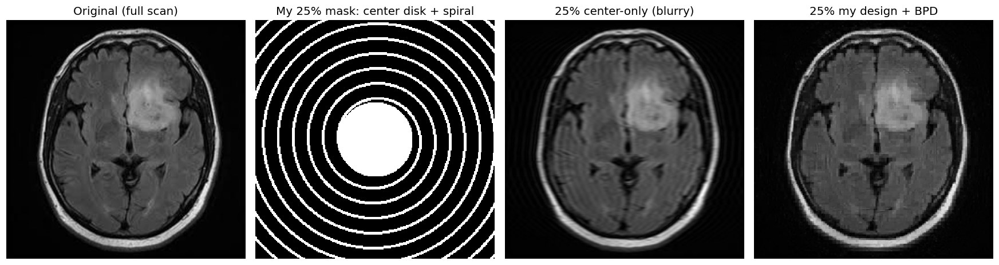
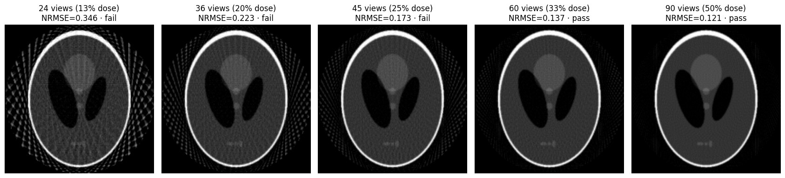

Faster MRI,
Lower-Dose CT.
MRI scanners measure Fourier coefficients and CT scanners measure line integrals. I designed a 25% k-space mask (center disk plus spiral) reconstructed with compressed sensing, and chose the fewest CT views that meet explicit error and dose limits.
HeadlineBrain MRI from 25% of k-space with the lowest error of the strategies tested · CT at 33% dose within the error limit
- Course
- EE 66, Signals, Dynamics & Information
- Lab
- Lab 5: Medical Imaging
- Timeline
- Week 12, Fall 2026
- Topics
- k-space, compressed sensing, filtered backprojection
Overview
How MRI and CT scanners turn raw measurements into images, and how to take fewer measurements without losing the diagnosis. An MRI scanner measures the 2D Fourier transform of the body (k-space), so scan time depends on how much of k-space you sample. A CT scanner measures X-ray line integrals from many angles, so radiation dose depends on how many angles you use. I designed reduced-measurement strategies for both.
Approach
- MRI as a linear measurement. Write the scanner as y = MFx: a 2D FFT F followed by a mask M that keeps only the sampled frequencies. Low frequencies carry overall contrast; high frequencies carry edges. Evenly skipped lines create ghost copies of the image.
- Faster leg scans (50% and 25% of k-space). Sample every other column, so the ghost copy lands in the empty space beside the calf. For 25%, also keep only the central band.
- Compressed sensing. Medical images are sparse in a wavelet basis, so missing k-space can be filled in by solving for the sparsest image that matches the measurements. This uses basis pursuit denoising (BPD) with Haar wavelets.
- A 25% brain scan. A brain fills the whole frame, so the ghost trick fails. My mask is a fully sampled disk at the center of k-space (radius 40) plus an 8-turn spiral that reaches the high frequencies. The spiral makes the missing data look like noise instead of ghosts, which BPD can remove.
- CT dose budget. Reconstruct a phantom with filtered backprojection from 24 to 90 evenly spaced angles. Pick the fewest views meeting two requirements: error (NRMSE) at most 0.15, and dose at most 50% of a 180-view scan.
BPD: ŵ = argminw ½‖M F W−1w − y‖² + λ‖w‖1, x̂ = W−1ŵ
Results
| Experiment | Baseline | Result |
|---|---|---|
| Compressed sensing, 50% random k-space | Zero-fill: NRMSE 0.199, SSIM 0.773 | BPD: NRMSE 0.141, SSIM 0.888 |
| Brain MRI, 25% of k-space | Center only: NRMSE 0.157, SSIM 0.856 | My disk + spiral, BPD: NRMSE 0.131, SSIM 0.862 |
| CT view budget (NRMSE ≤ 0.15, dose ≤ 50%) | 180 views (full dose) | 60 views: NRMSE 0.137 at 33% dose |
The brain design has the lowest error of the 25% strategies and keeps sharper edges than sampling only the center. The trade-off is a slightly blocky texture from the Haar wavelets. For CT, 45 views (25% dose) just missed the error limit at 0.173, so 60 views is the smallest budget that meets both requirements.


What I learned
- The Fourier transform isn't just analysis, it's the measurement. In MRI the scanner literally collects Fourier coefficients, so every scanning decision is a decision about which frequencies to keep.
- Where you sample matters as much as how much. The same 25% budget gives ghosts, blur, or a usable image depending on the pattern. Spreading samples incoherently turns structured artifacts into noise that can be cleaned up.
- Sparsity is a powerful prior. Knowing that images are simple in a wavelet basis lets an optimizer fill in data that was never measured.
- Engineering means turning requirements into numbers. "Good enough at low dose" only became a decision once I set an explicit error limit and dose cap.